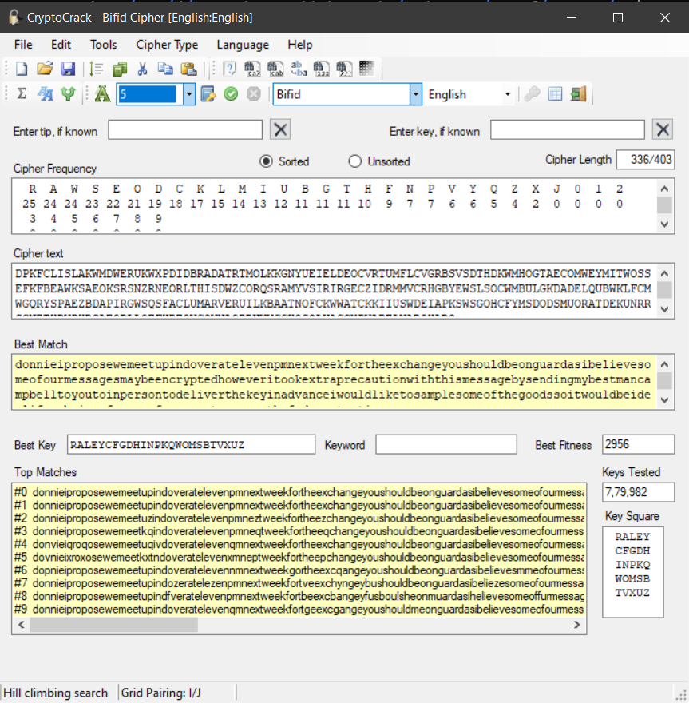

05
DPKFC LISLA KWMDW ERUKW XPDID
BRADA TRTMO LKKGN YUEIE LDEOC
VRTUM FLCVG RBSVS DTHDK WMHOG
TAECO MWEYM ITWOS SEFKF BEAWK
SAEOK SRSNZ RNEOR LTHIS DWZCO
RQSRA MYVSI RIRGE CZIDR MMVCR
HGBYE WSLSO CWMBU LGKDA DELQU
BWKLF CMWGQ RYSPA EZBDA PIRGW
SQSFA CLUMA RVERU ILKBA ATNOF
CKWWA TCKKI IUSWD EIAPK SWSGO
HCFYM SDODS MUORA TDEKU NRRSG
NETHD WPHRG AEODL LOEFH BEOWC
QWNAO BRUWW CCHOS OLUAC CXPWA
BEAWA ROHAR O
The flag is the name of the person mentioned in the message
Now, I couldnt solve this challenge while the challenge was running, because I got stuck on 04, nevertheless, here’s a quick writeup
Checking out the cipher statistics, the results turn out to be
Length:336 IC:47 MIC:60 MKA:73 DIC:23 EDI:25 LR:7 ROD:46 LDI:569 NOMOR:124
NIC:51 PHIC:47 MPIC:48 BDI:218 SDD:131 CDD:222 SSTD:60
HAS_L:Y HAS_J:N DBL:Y SERP:N HAS_#:N HAS_D:N HAS_0:N
DIV_2:Y DIV_3:Y DIV_5:N DIV_25:N DIV_4_15:Y DIV_4_30:Y PSQ:N
A_LDI:606 B_LDI:630 P_LDI:600 S_LDI:609 V_LDI:621 PTX:488 RDI:554
(used maximum period of: 15)
------------------------------
Winner is Bifid with 42 votes out of 100
vote distribution:
Bifid 42
Trisquare 31
Seriated_pfair 17
Cmbifid 9
Quagmire 1
The best vote based on statistical analysis hints towards Bifid Cipher. Referencing this video, I got to know about cool tools.
We can use Cryptocrack to crack the cipher.

It solves the cipher, giving out the keyZXUTVQPKINBMSWOYLERAHGDCF and the ciphertext
donnieiproposewemeetupindoveratelevenpmnextweekfortheexchangeyoushouldbeong
uardasibelievesomeofourmessagesmaybeencryptedhoweveritookextraprecautionwit
hthismessagebysendingmybestmancampbelltoyoutoinpersontodeliverthekeyinadvan
ceiwouldliketosamplesomeofthegoodssoitwouldbeidealifyoubringafewmenofyourow
ntoensurethefedscantgetinourwayrocco
Fixing spaces,
donnie i propose we meet up in doveratelevenpm next week for the exchange
you should be on guard as i believe some of our messages may be encrypted
however i took extra precaution with this message by sending my best man
campbell to you to in person to deliver the key in advance i would like to
sample some of the goods so it would be ideal if you bring a few men of
your own to ensure the feds cant get in our way rocco
We can see campbell is being referrenced here, so the flag is